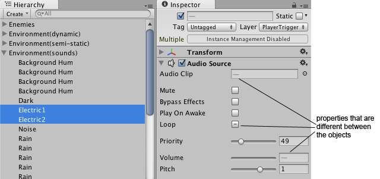
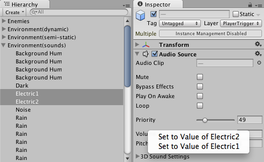
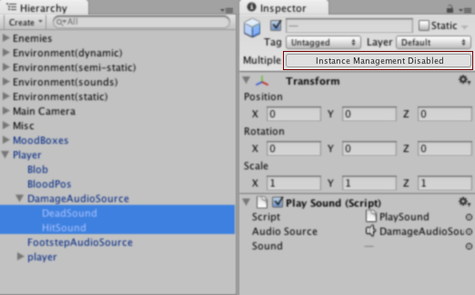

Multi-Object Editing
Starting in Unity 3.5 you can select multiple objects of the same type and edit them simultaneously in the Inspector. Any changed properties will be applied to all of the selected objects. This is a big time saver if you want to make the same change to many objects.
When selecting multiple objects, a component is only shown in the Inspector if that component exists on all the selected objects. If it only exists on some of them, a small note will appear at the bottom of the Inspector saying that components that are only on some of the selected objects cannot be multi-edited.
Property Values
When multiple objects are selected, each property shown in the Inspector represents that property on each of the selected objects. If the value of the property is the same for all the objects, the value will be shown as normal, just like when editing a single object. If the value of the property is not the same for all the selected objects, no value is shown and a dash or similar is shown instead, indicating that the values are different.

Regardless of whether a value is shown or a dash, the property value can be edited as usual and the changed value is applied to all the selected objects. If the values are different and a dash is thus shown, it's also possible to right-click on the label of the property. This brings up a menu that lets you choose from which of the objects to inherit the value.

Multi-Editing Prefab or Model Instances
Prefabs can be multi-edited just like Game Objects in the scene. Instances of prefabs or of models can also be multi-edited; however certain restrictions apply: When editing a single prefab or model instance, any property that is different from the prefab or model will appear in bold, and when right clicking there's an option to revert the property to the value it has in the prefab or model. Furthermore, the Game Object has options to apply or revert all changes. None of these things are available when multi-object editing. Properties cannot be reverted or applied; nor will they appear in bold if different from the prefab or model. To remind you of this, the Inspector will show a note with Instance Management Disabled where the Select, Revert, and Apply buttons would normally appear.

Non-Supported Objects
A few object types do not support multi-object editing. When you select multiple objects simultaneously, these objects will show a small note saying "Multi-object editing not supported".
If you have made a custom editor for one of your own scripts, it will also show this message if it doesn't support multi-object editing. See the script reference for the Editor class to learn how to implement support for multi-object editing for your own custom editors.